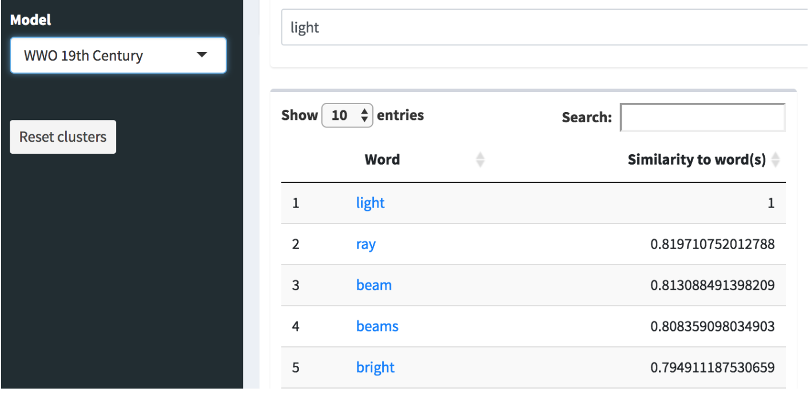

Discovering with "Clusters"
By Cara Marta Messina
Description
This classroom-based activity will introduce students to understand and explore the “Clusters” function in Women Writers Word Vector Interface (WVI)–available through the Women Writers Vector Toolkit(WWVT)–and enable them to begin exploring larger thematic questions about the centuries in Women Writers Online. The activity will mainly consist of understanding and using the Cluster function as a catalyst for discover; however, it can be paired with several other activities and act as a starting point for incorporating WWO, word vector models, and text analysis in the classroom.
Learning Goals
This activity will enable students to:
- Gain a basic understanding of the Women Writers Word Vector Interface, particularly the difference between “Clustering” queries and “Basic” queries.
- Better understand what word vector models are and why they are useful.
- Prepare to further explore and discover information from the models and the WWO corpus.
Activity
Using the “Clusters” function, students will choose a particular model of interest and begin exploring the different clusters that pop up. What is important about this, though, is to compare the randomized “Cluster” results to the results in the “Basic” function and discuss why these are different. Below is an explanation of the difference between “Clusters” and “Basic” queries
The “Clusters” results show the top 10 results of a cluster of words around a specific point in the vector map. These results are different than the “Basic” search because the “Basic” search is making a specific word the central point on the vector map, while the cluster is choosing a random point, not a word. We recommend providing a brief explanation for your students about the differences in results. You may use the vocabulary provided, some of the resources provided on the website, as well as this visual guide. These results are all from the “WWO 17th” model.


Another way to look at the difference between the “Clusters” and “Basic” results is visually and thinking about the “point of origin” for these results. The point of origin for “Clusters” is a randomized point on the entire model of the corpus, while the point of origin for the “Basic” results is a specific word in the corpus. Here is a visual depiction:

“Clusters” results as discovery
Because clusters are randomized points on the corpus model, they provide more of a window into the word vector model rather than more concrete results. Introduce the Clustering results as a way in for your students to get familiar with how these models represent the specific corpus.